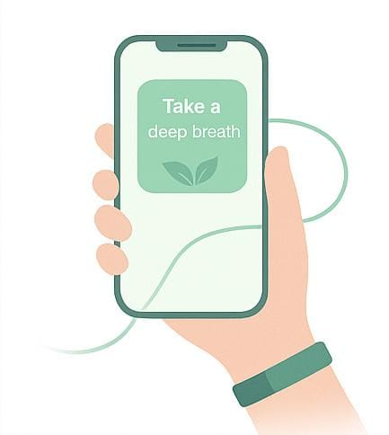

Sinta. SENZ percebe.
Ela capta sinais do seu corpo, como batimentos e suor e entende quando algo muda nas suas emoções.
Ela fala com você. de verdade.
Quando você está sobrecarregado, a pulseira envia mensagens de apoio, exercícios de respiração ou meditação direto no app, no seu fone ou por vibrações sutis em sua pulseira.
Ajuda contínua, silenciosa e universal
Funciona 24h por dia, mesmo em silêncio. Os dados ajudam você e até sistemas de saúde a prevenirem crises antes que virem emergências.
Bem-vindo ao SENZ!
Vamos começar o seu bem-estar emocional.